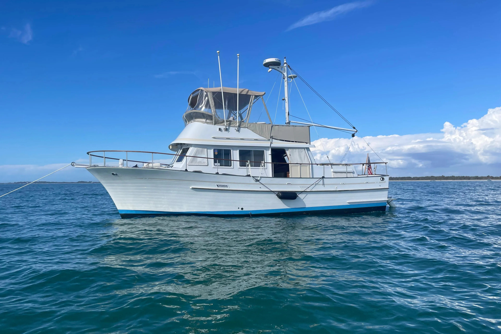

Albin 36 Trawler
1979–1993
The Albin 36 Trawler is a Taiwan-built traditional two-stateroom cruiser with a lower helm, flybridge, full walkaround decks and extensive teak joinery. A solid-fiberglass semi-displacement hull and full-length skeg protect the running gear. Most boats emphasize economical displacement-speed cruising, although later single- and twin-engine installations can provide higher speeds.

- Length
- 35.75 ft
- Beam
- 13.17 ft
- Draft
- 3.5 ft
- Hull behaviour
- Semi-Displacement
- Fuel
- Diesel
- Propulsion
- Shaft
- Engine configuration
- Single diesel standard for many years; later single and twin installations exist
- Boat family
- Trawler
- Construction
- Taiwan-built fiberglass semi-displacement trawler with extensive teak joinery; deck construction varies by year
Best for
- Couples wanting a traditional aft-cabin trawler
- Extended inland and coastal cruising
- Owners comfortable maintaining teak and older systems
Trade-offs
- Exterior teak and brightwork create substantial maintenance
- Age means tanks, wiring, exhaust and deck structures deserve careful survey
- Thirteen-foot beam and flybridge increase marina and storage constraints
- Later engine variations change speed, complexity and operating cost
Known concerns
- No model-specific concern has been promoted to B-Atlas’s evidence threshold. This does not mean the model has no age-, condition- or hull-specific risks.
Inspection focus
- Moisture-test teak decks, deck penetrations, window surrounds and cabin-house joints
- Inspect fuel tanks, fill and vent hoses, supports and access
- Inspect original and modified AC/DC electrical systems
- Inspect exhaust, cooling, engine mounts, shafting, rudders and steering gear
- Assess exterior teak condition and prior structural or deck repairs
Continue researching
Related boat models
40.25 ft · Semi-Displacement
36.75 ft · Planing
26.75 ft · Semi-Displacement
31.42 ft · Semi-Displacement
29.92 ft · Planing
29.92 ft · Planing
About this record
B-Atlas preserves uncertainty: missing information remains unknown rather than being treated as a negative. Specifications and guidance describe the model record; individual boats can differ by year, equipment, refit and condition.